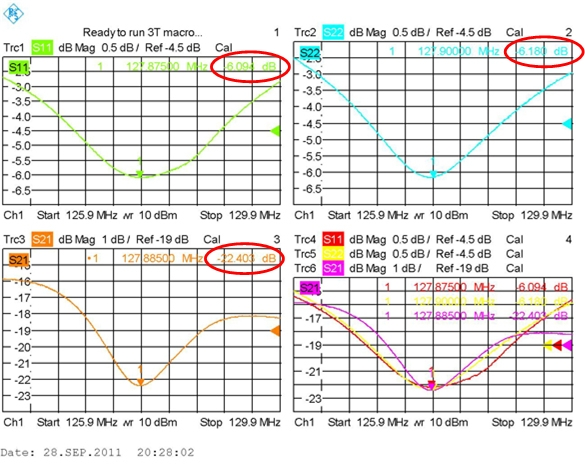
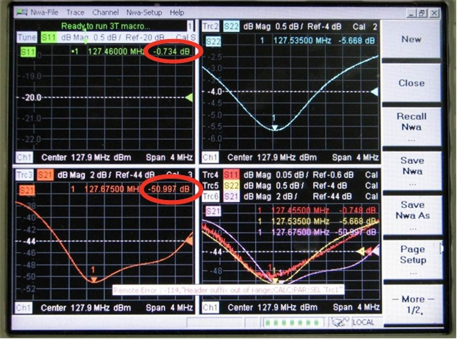
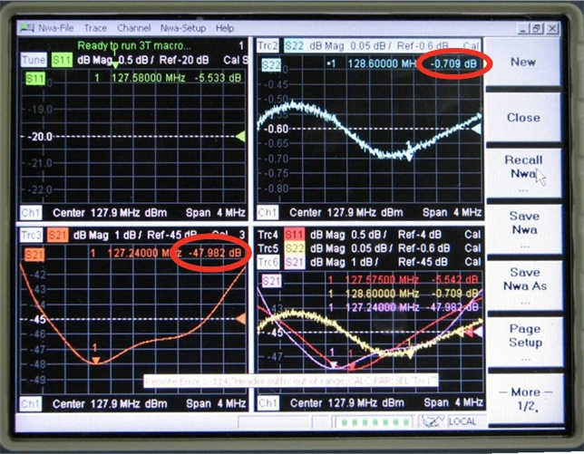
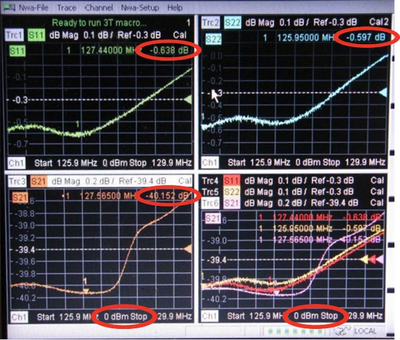

- 00000018WIA3060FE20GYZ
- id_131061083.1
- Oct 11, 2021 3:56:10 PM
Body Coil Tuning Troubleshooting
Overview
This document describes tips for troubleshooting when issues arise during the Body Coil Tuning procedure. Primarily, this document discusses tips for using the network analyzer.
Facts about RF Tuning
Here are some facts you should keep in mind when tuning the body coil.
-
It is always a good idea to press the blue PRE-SET button on the front face of the network analyzer before performing and subsequent network analyzer calibrations from initial one done directly after the network analyzer is powered on from its off state.
-
Pressing the blue PRE-SET button on the front face of the network analyzer erases memory and sets it back to its default condition.
-
The network analyzer retains the contents of its memory until either the PRE-SET button is pressed or the rear power switch is turned Off for more than 30 seconds (this is the true power-off condition).
-
Pressing PRE-SET is not needed if the network analyzer calibration has begun after the network analyzer has been initialized from a true power-off condition.
-
-
Select and use only those tuning scripts from the network analyzer menu pull-down required by Body Coil Tuning.
-
The loader shell and phantom must be placed at the center of magnet (822mm), centered right to left, sitting on belt travel notch of bridge. Vertical phantom centering is not needed if the bridge height is properly adjusted.
-
Pay careful attention to the connection of RF cables to the network analyzer.
This network analyzer port: Connects to this cable removed from the DTRSW: Port 1 Body 1 Port 2 Body 2 -
Sloppy RF cable routing during network analyzer calibration during tuning can negatively impact network analyzer measurements. Avoid RF cable loops and/or kinks when running cables from the network analyzer to the body coil.
-
Perform the network analyzer calibration exactly as described in Service Methods. Small deviations in the process can introduce errors that unnecessarily lengthen tuning time.
-
Subtle deviations from the documented RF body coil tuning process can be the difference between tuning only a few times by adjusting only the variable capacitors on the RF body coil, or the much more time-consuming process of first changing the dielectric material and then adjusting the capacitors many times.
-
Pay careful attention to plot shape network analyzer annotations. Noisy plots can sometimes produce passing values/numbers, but the end result is a poorly tuned coil.
Normal Plot Display

Notice the single dip, smooth curves in all of the visible plots. Also notice the typical null attenuation values (circled in red).
Troubleshooting Abnormal Plots
This section describes plots that indicate issues you may encounter during the Body Coil Tuning procedure and what you can do about them.
Abnormal S11 Plot
The following illustration shows abnormal S11 and S21 plots, indicating bad or no bias to S11.

Note there is no S11 plot.
The S11 signal strength is - 0.734 dB. Typically, the lowest part of the “dip” in the signal is around - 6 dB.
Although S22 is not within specification, the waveform and attenuation are normal. Therefore, the issue is isolated only to channel 1.
-
Set up a body scan, and then pulse the scanner once to place DD bias permanently in body mode.
-
Press the blue PRE-SET button on the upper left of the face of the network analyzer (or toggle the network analyzer’s rear power switch Off for 30 seconds). Repeat network analyzer calibration and coil tuning.
-
Swap the DD cables between the bias tees, and see if the problem moves from S11 to S21.
-
If the problem does not move, it is likely that there is a bad bias tee.
-
If the problem moves from S11 to S21, check the body DD bias to Port 1 on the network analyzer. It should be -13 VDC unloaded (measure directly from end of open cable center-pin and shield) and -2.6 VDC loaded. (Insert a BNC tee inline between the cable and coupler tee and measure from the open port center-pin and shield. Also, recheck the plot shape to determine if the addition of the BNC tee improved the electrical connection.)
If some plots are still abnormal, swap the whole coupler tee and cable assemblies between network analyzer Port 1 and Port 2.
-
If the S11 plot looks normal, then check the cable connections from network analyzer Port 2 to the body coil.
-
If the S11 plot is still abnormal, press the blue PRE-SET button on the upper left of the face of the network analyzer, return the cables to their normal locations, and repeat network analyzer calibration and coil tuning.
-
If the preceding steps do not result in normal plots, try a new network analyzer kit.
-
-
Abnormal S22 and S21 Plots
The following illustration shows abnormal S22 and S21 plots, indicating port 2 is missing body DD bias.

Notice the double dips on the S21 plot (lower left window) and also notice the noisy S22 plot in the upper right window. Also notice the S22 null attenuation is -0.709 dB, which is considerably different from the value for S11 (-5.533 dB).
The low S21 magnitude -47.982 dB is atypical (-23 dB is typical).
In this example, the network analyzer Port 2 body DD bias (-13 V unloaded, 2.6 V loaded) is missing.
If the S22 and S21 plots are both abnormal:
-
Set up a body scan, and then pulse the scanner once to place DD bias permanently in body mode.
-
Press the blue PRE-SET button on the upper left of the face of the network analyzer (or toggle the network analyzer’s rear power switch Off for 30 seconds). Repeat network analyzer calibration and coil tuning.
-
Check the body DD bias to Port 1 on the network analyzer. It should be -13 VDC unloaded (measure directly from end of open cable center-pin and shield) and -2.6 VDC loaded. (Insert a BNC tee inline between the cable and coupler tee and measure from the open port center-pin and shield. Also, recheck the plot shape to determine if the addition of the BNC tee improved the electrical connection.)
-
If some plots are still abnormal, swap the whole coupler tee and cable assemblies between network analyzer Port 1 and Port 2.
-
If the S22 plot looks normal, then check the cable connections from network analyzer Port 1 to the body coil.
-
If the S22 plot is still abnormal, press the blue PRE-SET button on the upper left of the face of the network analyzer, return the cables to their normal locations, and repeat network analyzer calibration and coil tuning.
-
If the preceding steps do not result in normal plots, try a new network analyzer kit.
-
All Plots Noisy or Abnormal
In the following illustration, all of the plots are noisy or abnormal, indicating both network analyzer Ports 1 and 2 are missing body DD bias.

Notice the poor null definition in all of the plots. Notice also that the S11 and S22 plots are noisy.
The small null attenuation value for S21 and S22 is atypical (-5.7 dB is typical). Also, the low S21 magnitude of -40.152 dB is atypical (a typical value is -23 dB).
In this example, both network analyzer Ports 1 and 2 are receiving inadequate body DD bias. (Typically, the body DD bias is -13 V unloaded and -2.6 V loaded.)
In this case, the cause was poorly built test kit cables with recessed BNC center pins, causing them to make poor contact. Adding a BNC tee at each coupler improved connection, permitting measurement of loaded DD bias voltages with a digital multimeter (DMM). The final solution was to repair the cables.
If all network analyzer plots are abnormal (noisy and too many peaks or nulls):
-
Set up a body scan, and then pulse the scanner once to place DD bias permanently in body mode.
-
Remove anything extra from the magnet bore such as the cradle or the GEM PA coil.
-
Confirm the loader shell and phantom are at the center of the magnet (835 mm) and centered left to right in the middle of the bridge.
-
Press the blue PRE-SET button on the upper left of the face of the network analyzer (or toggle the network analyzer’s rear power switch Off for 30 seconds). Repeat network analyzer calibration and coil tuning.
-
If the plots are still abnormal, insert a BNC tee in series between the DD bias line and each coupler tee and use a DMM to confirm the loaded voltage (approximately -2.6 VDC) between the center-pin and shield of the open BNC tee port.
-
Use a DMM and confirm the condition of 50 ohm standard from the kit. It should measure 50 ohms ± 5 ohms. Take the measurement with the standard connected to one end of the unused cable and measure from the other end of the same cable to capture typical values with the standard in normal configuration.
-
Press the blue PRE-SET button on the upper left of the face of the network analyzer, then repeat the standard network analyzer calibration and coil tuning processes.
All Plots Abnormal but not Noisy, or only S21 Plot Abnormal
If all plots or only the S21 plot have more than one null and the body coil will not meet tuning goals, but the plots are not noisy:
-
Make sure the network analyzer cables are connected according to the Body Coil Tuning procedure. The body coil tuning will be affected if the cables are swapped.
This Network Analyzer Port: Connects to this cable removed from the DTRSW: Port 1 Body 1 Port 2 Body 2 -
Press the blue PRE-SET button on the upper left of the face of the network analyzer (or toggle the network analyzer’s rear power switch Off for 30 seconds). Repeat network analyzer calibration and coil tuning.
-
Follow the Body Coil Tuning procedure, making sure body coil isolation is done and that the body coil outer diameter is aligned relative to the VRMW inner diameter. See Body Coil Isolation.
-
Use a DMM and confirm the condition of the 50 ohm standard from the kit. It should measure 50 ohms ± 5 ohms. Take the measurement with the standard connected to one end of the unused cable and measure from the other end of the same cable to capture typical values with the standard in normal configuration.
-
Perform step 2 again.
-
If all of the plots are abnormal (not just S21), try a new network analyzer kit.
Flashing “Tuned” Message
If you are running the 750w Body Coil Tuning network analyzer macro, you may see a Tuned message that does not remain steady (alternating with a message telling you to adjust a variable capacitor). This indicates that the tuning is not actually complete.
In this case:
-
Try to follow the message that tells you to turn the variable capacitor.
-
Click the OK button several times while the Tuned message is shown to go to the next step in the tuning macro. (In doing this, you are trying to “catch” the network analyzer while it is indicating that the coil is untuned.)